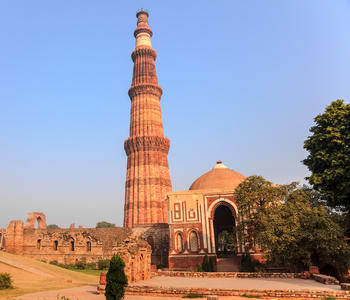
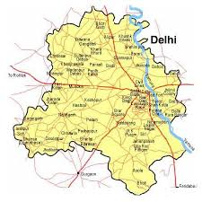
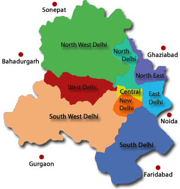
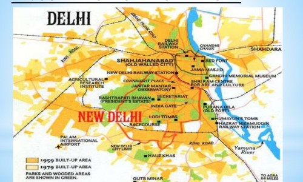

Delhi Tourism |
History | Geography | Food | Monuments | Markets | Education | Weather | Festivals | Pilgrims | ||
|---|---|---|---|---|---|---|---|---|---|---|---|
|  | |||||||||||
Geography of DelhiDelhi officially the National Capital Territory of Delhi (NCT), is a city and a union territory of India. It is bordered by Haryana on three sides and by Uttar Pradesh to the east. The NCT covers an area of 1,484 square kilometres (573 sq mi). According to the 2011 census, Delhi's city proper population was over 11 million, the second-highest in India after Mumbai, while the whole NCT's population was about 16.8 million. Delhi's urban area is now considered to extend beyond the NCT boundary and include the neighboring cities of Faridabad, Gurgaon, Noida and Ghaziabad in an area now called Central National Capital Region (CNCR) with an estimated 2016 population of over 26 million people, making it the world's second-largest urban area according to United Nations. As of 2016 recent estimates of the metro economy of its urban area have ranked Delhi either the most or second-most productive metro area of India. It is the second-wealthiest city after Mumbai in India, with a total wealth of $450 billion and home to 18 billionaires and 23,000 millionaires. Delhi has been continuously inhabited since the 6th century BC. Through most of its history, Delhi has served as a capital of various kingdoms and empires. It has been captured, ransacked and rebuilt several times, particularly during the medieval period, and modern Delhi is a cluster of a number of cities spread across the metropolitan region. A union territory, the political administration of the NCT of Delhi today more closely resembles that of a state of India, with its own legislature, high court and an executive council of ministers headed by a Chief Minister. New Delhi is jointly administered by the federal government of India and the local government of Delhi, and is the capital of the NCT of Delhi. Delhi hosted the first and ninth Asian Games in 1951 and 1982, respectively, 1983 NAM Summit, 2010 Men's Hockey World Cup, 2010 Commonwealth Games, 2012 BRICS Summit and was one of the major host cities of the 2011 Cricket World Cup. | |||||||||||
|  |  |  | |||||||||
| Copyright all Right Reserved BY Arvinder Singh | |||||||||||